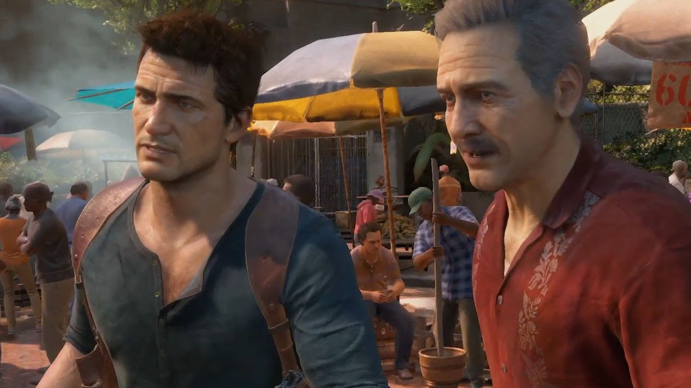

Uncharted 4: El desenlace del ladrón
En medio de una tormenta, Nathan Drake conduce una lancha en el mar junto a su hermano, Samuel Drake, mientras son perseguidos por un grupo de mercenarios. Pero sus intentos por escapar son en vano y su lancha es derribada por un barco. Tras esto, la historia retrocede a la preadolescencia de Nathan, aproximadamente en 1992 cuando vivía en un orfanato católico. Esa misma noche, Nathan es castigado por un altercado con otro niño. Después del regaño de la hermana Catherine se queda solo en la habitación, hasta que aparece su hermano Sam en la azotea de uno de los edificios del orfanato y le hace señales con una linterna. Por lo tanto, Nathan sale por la ventana, se reúne con Sam y escapan del orfanato. Pero este le dice a Nathan que debe salir de la ciudad por un trabajo temporal donde puede ganar dinero, diciéndole a Nathan que ya sabe donde están las pertenencias de su madre (luego de que fueran vendidas por su padre, quien los había abandonado en el orfanato cuando su madre murió) y que hará todo lo posible por regresar. Años después, ambos están buscando pistas sobre el tesoro perdido de Henry Avery. Con la ayuda de un policía corrupto llamado Vargas, ambos se infiltran en una prisión de Panamá. Dentro se alían con Rafe Adler, un millonario que también llegó a la prisión. Dentro, Nate tiene una pelea con Gustavo, un prisionero latinoamericano. Nate, Sam y Rafe buscan pistas del primer oficial de Avery, Joseph Burnes, quien fue colgado en una zona aledaña de la prisión. Nate encuentra la celda del primer oficial y recupera una cruz de san Dimas, que le indica la siguiente ubicación del tesoro. Sin embargo, Nathan le miente a Vargas y le dice que no ha encontrado nada. Se reúne con Sam y Rafe para examinar la cruz. Los tres suponen que, probablemente, el tesoro esta en Escocia y deciden escapar. Pero un altercado con Gustavo y algunos de sus amigos les dificulta el escape. Vargas aparece y lleva a los tres a su oficina. Vargas se da cuenta de que lo han engañado e intenta negociar con ellos para obtener una parte de las ganancias, pero Rafe lo apuñala luego de "cerrar" el trato y los tres se ven forzados a huir. Lamentablemente, Sam es baleado cerca de la salida (muriendo aparentemente), pero Nate y Rafe logran escapar. Quince años después, Nathan deja a un lado sus aventuras como cazatesoros. Ahora lleva una vida normal, trabajando para una compañía de salvamento marítimo y viviendo con su esposa Elena. Una noche, en su lugar de trabajo, recibe una visita inesperada. Es su hermano Sam. Este le explica que los médicos lo salvaron de sus graves heridas esa vez, pero las autoridades panameñas lo mantuvieron en prisión después de la muerte de Vargas. Aun así, Nathan no puede creer que su hermano siga vivo. Sam sostiene una conversación sobre las aventuras de Nathan durante su ausencia. Pero después de escucharlo, este le cuenta sus problemas. Al parecer, su último compañero de celda fue el líder de un cartel panameño, llamado Héctor Alcázar. Un año antes, el ejército del cartel atacó la prisión y ayudó a Alcázar y Sam a escapar. El problema es que Sam siempre le contaba detalles sobre el tesoro de Henry Avery. Ahora Alcázar quiere una parte de ese tesoro y amenaza con matarlo si no encuentra el tesoro en un plazo de tres meses. Por lo tanto, Sam solicita la ayuda de su hermano para encontrar el tesoro antes de que se cumpla el plazo. Aunque Nathan se niega al principio, se compadece de su hermano y le ayuda. Nathan le informa a Sam que Rafe sigue buscando el tesoro. Para que su esposa no sospeche, le dice que está realizando un trabajo especial en Malasia por orden de su jefe. Ahora Nathan y Sam viajan a la Hacienda Rossi, en Italia, para reunirse con Victor Sullivan. Allí será subastada una segunda cruz de san Dimas, ya Sam descubrió que Henry Avery hizo más de una cruz. Tras infiltrarse en el edificio, el trío nota que la cruz está a punto de ser vendida al mejor postor. Como no pueden robarla del modo en que lo planearon, optan por desactivar la electricidad del edifico. Sully se encuentra con Nadine Ross, quien es la líder de una red de mercenarios llamada Shoreline; luego lo sorprende Rafe, quien llega buscando la cruz y revela que se unió con Nadine para encontrar el tesoro. Mientras Sully gana tiempo compitiendo contra Rafe en la subasta, Nathan logra infiltrarse en las instalaciones de mantenimiento y desactiva la electricidad. Sully y Sam toman la cruz y salen desapercibidos de la subasta. Mientras tanto, Nathan se las arregla para evadir a los guardias, quienes se mantienen alerta para encontrarlos. Pero se encuentra con Nadine Ross y se enfrenta a ella en un combate mano a mano. Durante el combate, Nadine arroja a Nate por la ventana, pero afortunadamente sobrevive y escapa con los demás. El trío examina la cruz y encuentran otra pista que los llevará a Escocia, a la catedral de San Dimas. Según los escritos apócrifos, Dimas fue uno de los malhechores al que Jesús le dijo: "Estarás conmigo en el Paraíso." En ese momento, Victor y Sam aconsejan a Nathan para que no continúe con el viaje y vuelva con su esposa. Pero él vuelve a mentirla y se embarcan en la búsqueda del tesoro. Una vez en Escocia, los hermanos Drake se encuentran con los mercenarios de Shoreline, lo que significa que Rafe y Nadine también están allí. Aun así, logran llegar a la catedral y encuentran un pasaje subterráneo en la tumba de Henry Avery. Una vez que resuelven los acertijos de las catacumbas, los Drake se dan cuenta de que el tesoro no está. Solo obtienen otra pista del tesoro a través de un mapa holográfico, que los conduce a Madagascar. El descubrimiento es interrumpido cuando Nadine y su ejército capturan a los Drake pero, afortunadamente, logran escapar con Victor. Sin embargo, una vez en Madagascar, Nate le miente nuevamente a Elena diciéndole que el trabajo de Malasia tardara más de los esperado. Aunque ella se preocupa un poco, Nathan la convence para que no vaya hasta donde él está. Ahora el trío se dirige al volcán inactivo de Kings Bay. El problema es que Shoreline va un paso adelante. Allí encuentran un mapa simbólico que revela varias locaciones posibles de donde se encuentra el tesoro. Las localizaciones son doce torres en todo Madagascar. También descubren que Henry Avery, Thomas Tew, y otros diez piratas almacenaron todos sus tesoros en un solo lugar. Así que Sam, Nate y Sully deciden separarse y buscar pistas en diferentes torres. Nathan y Sully van a una torre cerca a un mercado, al entrar, descubren un gigante reloj que llevaba tiempo sin funcionar. Al resolver el acertijo del reloj que implicaba hacer sonar todas las campanas en determinado orden, este se destruye totalmente, revelando la entrada a un cuarto con un acertijo final, lo que resulta que la torre a la que fueron es la correcta. Una vez que resuelven el acertijo, descubren su próximo destino. El problema es que Rafe ha intervenido sus teléfonos y ya sabe donde están. Le ofrece a Nate la oportunidad de dejarlo todo e irse, pero él rechaza la oferta. Por lo tanto, al ver que Sam está en peligro, Nate y Sully se enfrentan a los mercenarios de Shoreline y logran rescatarlo. De vuelta al hotel, los Drake le explican a Sully que las pistas del tesoro apuntan a Libertalia, una colonia pirata de la cual Avery y los demás capitanes parecen ser los dueños y fundadores. Para su sorpresa, Nate entra en la habitación y encuentra a su esposa Elena. Al ver que descubre la verdad, ya no puede mentirle y decide contarle todo. Pero Elena discute con él por haberle mentido y no mencionarle nada sobre Sam. Ella se va, dejando que su esposo haga lo que debe. Sam y Sully intenta convencerlo para que vaya con su esposa y vuelva a casa, pero él insiste en continuar y le pide a Sully que cuide de Elena mientras va con Sam a Libertalia. Una vez que llegan a la isla para seguir explorando, Nate y Sam encuentran la estatua de Henry Avery, la cual revela la ubicación de otra isla contigua sin explorar. Pero los mercenarios de Shoreline llegan adonde están. En ese momento, los protagonistas se encuentran al comienzo de la historia, donde son perseguidos por los mercenarios en medio de la tormenta. Su lancha es embestida por un barco y Nate queda inconsciente. Nathan despierta, pero descubre que su hermano ha desaparecido. Sin embargo, Sam le hace señas con la linterna para que sepa que está bien, por lo que Nate decide continuar. Durante el recorrido, los hermanos Drake se reencuentran y sostienen una discusión sobre si deben continuar con la búsqueda del tesoro o no. Pero más pistas los llevan a seguir adelante, hasta encontrar la colonia de Libertalia. Al explorar las casas y los edificios del lugar, descubren un mapa local que les muestra el camino al tesoro. Pero durante el recorrido, son atacados por los mercenarios. Después, Nathan y Sam luchan contra Nadine hasta que Rafe llega con sus hombres. Sam toma a Nadine de rehén. Rafe lo provoca para que le dispare, pero al momento en el que Sam jala del gatillo, Nate lo evita y ambos se rinden. Así que Nate intenta hacer un trato con Rafe. Lo ayudará a encontrar el tesoro a cambio de dejar libre a Sam para poder cumplir el plazo de Alcázar. Pero Rafe le revela la verdad: Alcázar murió en un tiroteo en Argentina 6 meses atrás y nunca escapó de la cárcel con Sam. Él nunca dejó de buscar el tesoro desde que escaparon de Panamá. Descubrió que Sam estaba vivo y lo liberó de la cárcel sobornando a los policías para que lo ayudara a encontrarlo. Aun así, Nathan intenta convencerlo para ayudarlo a encontrar el tesoro. Pero Rafe apunta a Nate, dándole a entender que no lo necesita, solo a Sam, quien se interpone y Rafe lo hiere en el brazo, pero Nate cae al precipicio, quedando inconsciente. En ese momento, su esposa Elena llega para ayudarlo. Nuevamente, la historia retrocede a la preadolescencia de Nathan, cuando escapó con su hermano del orfanato en busca de las cosas de su madre. Él y su hermano se dirigen a buscar las pertenencias de su madre a una gigantesca casa, llena de valiosos artefactos arqueológicos de grandes civilizaciones antiguas. Al encontrar el diario y las cosas de su madre, los descubre la anciana que vive en la casa, llamada Evelyn, quien los apunta con un revolver para que les de el diario, revelando que había llamado a la policía. Pero al darse cuenta de que son los hijos de Cassandra Morgan, les da el diario y les cuenta que su madre y ella fueron historiadoras, que hicieron grandes descubrimientos juntas, y formulando también teorías sobre la posible descendencia de Sir Francis Drake, pero todo acabó luego de la muerte de Cassandra. Pero al momento de dialogar con la policía por el malentendido, Evelyn fallece de repente de un infarto, por lo que Nathan y Sam se ven obligados a escapar de la policía. Al descubrir que su madre era historiadora y creía que Sir Francis Drake tenía herederos, ellos adoptan el apellido Drake a partir de ese entonces para proteger su identidad de la policía. De regreso al presente, Nate le cuenta a Elena la verdad y le menciona como fue que él y su hermano comenzaron sus aventuras desde pequeños. Por lo tanto, Elena y Sully deciden ayudarlo a rescatar a Sam. Durante el transcurso de la búsqueda, Nathan intenta recuperar su relación con Elena. El problema es que los mercenarios de Shoreline vigilan toda la zona de la jungla, por lo que Nathan y Elena deben enfrentarlos. A medida que van descubriendo más detalles de lo que pasó en Libertalia, logran rescatar a Sam. Aunque los demás tienen planeado irse, Sam quiere encontrar el tesoro. Intenta convencer a Nathan de que aún queda oportunidad de encontrarlo antes que Rafe. Al parecer, el tesoro se encuentra debajo de la montaña más alta de la isla. Sin embargo, Nathan razona con él, diciéndole que ya no son niños y no tienen nada que probar. Sam acepta a regañadientes y se dirigen al avión con el resto. Al intentar regresar, Sam se separa del resto y decide buscar el tesoro por su cuenta. Los demás deciden buscarlo y traerlo de vuelta, pero Elena y Sully ya no pueden seguir, dejando que Nathan busque a su hermano. Se adentra en la cueva de la montaña. En un muelle, Nadine y dos mercenarios están cargando unos cajones con oro, y Rafe llega diciendo que deben ir al barco, Nadine le revela que perdió muchos hombres y que prefiere volver con lo que tiene que quedarse a morir. Para hacerla entrar en razón, Rafe la abofetea; Nadine, enojada, intenta matar a Rafe, pero uno de los mercenarios la provoca, revelando que Rafe les prometió dinero para que se pusieran de su lado. Después de esto, los cuatro se dirigen al barco de Avery. Nate decide nadar hasta el barco, pero poco después ocurre una explosión en el navío. Se infiltra en el barco y encuentra a los dos mercenarios muertos y el tesoro de Avery en grandes cantidades, revelando que de verdad estaba ahí. Nate entra en la sala del tesoro y ve que su hermano se encuentra inconsciente y Nate se rinde al encontrarse con Rafe, quien le ordena a Nadine quitarle el arma. Pero Nadine le quita el arma a Rafe, traicionándolo, y se va con los dos cajones del tesoro que encontró anteriormente, no sin antes encerrarlos. Nate se da cuenta de que hay un par de esqueletos con espadas clavadas: eran Henry Avery y Thomas Tew, que se mataron el uno al otro para quedarse con el tesoro. En ese momento Rafe enloquece, toma la espada de Tew y lucha contra Nate en un duelo a muerte, no sin antes revelarle que la única razón por la que quería el tesoro era para ser conocido, ya que tenía envidia de Drake. Nathan toma la espada de Avery y pelea con Rafe. Rafe le quita la espada a Nate y está a punto de matar a Nate; Sam, retomando el conocimiento, le da la espada a Nathan y este logra esquivar los ataques de Rafe. Sin embargo, Rafe destruye su espada, pero justo antes de ser ejecutado, Nate corta una soga con lo que quedaba de su espada, lo que hace que una red con grandes cargamentos de oro caiga encima de Rafe, matándolo en el acto. Aunque el barco empieza a explotar por la pólvora (causando su hundimiento) y la montaña se derrumba, los Drake logran salir y escapan de la isla con Elena y Sully. De regreso al puerto de Madagascar, Nathan y Elena se despiden de Sam y Sully para volver a casa. Mientras tanto, Sam y Sully deciden asociarse para comenzar a trabajar juntos. De vuelta en casa, Nate está en su oficina trabajando y su jefe le dice que está vendiendo la empresa. Para su sorpresa, ahora Nate es el nuevo propietario de la compañía de salvamento. Nate cree que su jefe está bromeando, pero Elena aparece esa misma tarde y le explica que compro la compañía con el oro que Sam le dio cuando lo obtuvo de Libertalia. Aunque Nate empieza a dudar de sus intenciones, Elena le confiesa que quiere vivir una vida de aventuras con él y eso les da sentido a sus vidas. En conclusión, ambos deciden comenzar con su primera expedición en Malasia, el trabajo que Nate nunca llegó a realizar. En el epílogo, una joven adolescente aparece en la escena final buscando a sus padres mientras recorre la casa donde vive. Se trata de Cassie Drake, la hija de Nathan y Elena. Como no encuentra a sus padres, decide ir al estudio de la casa de al lado. Allí se da cuenta que su padre dejó las llaves del armario. Cassie revisa todas las reliquias que sus padres han coleccionado con el paso de los años, entre ellas la moneda encontrada en Uncharted: El tesoro de Drake, un poco de resina del Árbol de la Vida de Uncharted 2, el artefacto que funcionaba con el anillo en Uncharted 3: La traición de Drake y una moneda del tesoro de Avery. Hasta que sus padres llegan y les dice lo obvio. Aunque Nathan duda si su hija está preparada para escuchar sus aventuras, Elena toma la iniciativa y ambos deciden contarle todo a Cassie.
